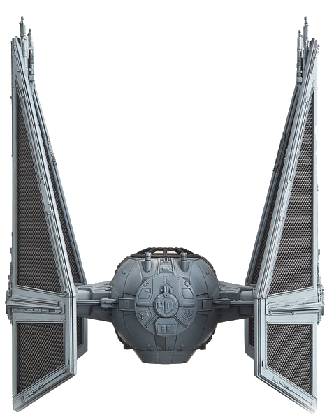
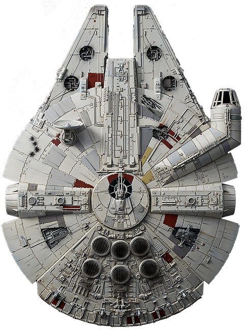
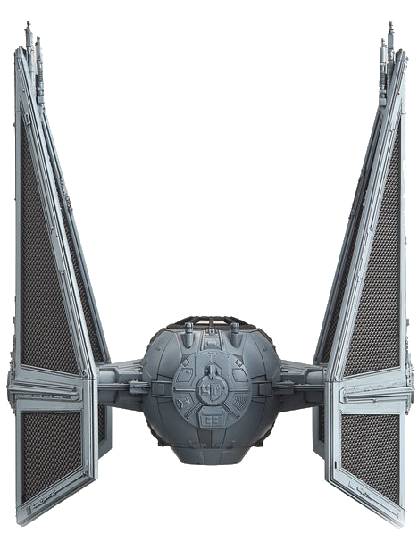
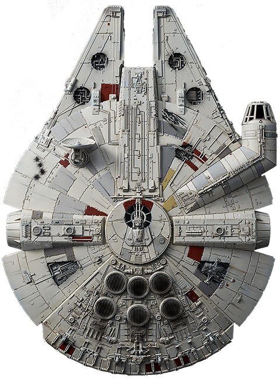

Bem-vindo ao nosso jogo!
Em nosso jogo, os jogadores são lançados em uma emocionante batalha no espaço sideral onde devem pilotar uma nave espacial de sua escolha e lutar pela sobrevivência contra hordas de naves inimigas. Com gráficos impressionantes e uma jogabilidade envolvente, este jogo oferece uma experiência imersiva que desafia suas habilidades de combate e estratégia.
 



Ao iniciar o jogo, os jogadores têm a oportunidade de escolher entre três naves espaciais únicas, cada uma com suas próprias características. Cada opção oferece uma abordagem única para enfrentar os desafios que aguardam no cosmos.
Uma vez que sua nave esteja pronta para o combate, você será lançado para enfentrar uma variedade de inimigos. Utilize suas habilidades de pilotagem e estratégia para desviar dos inimigos,mirar com precisão e disparar seus próprios armamentos devastadores.
O Encontro Final
Em enxames constantes, milhares de naves inimigas menores tentarão te atacar antes que você tenha a chance de enfrentar Malígioth. Essas naves são rápidas e atacam em grande número, tentando te sobrecarregar com sua quantidade. Destrua essas naves para obter power-ups e munição que te ajudarão no combate contra Malígioth.
Para derrotar Malígioth, é necessária uma combinação de coragem, estratégia e tecnologia avançada. Sua fraqueza reside em um núcleo de energia localizado no centro de seu corpo titânico, protegido por camadas de armadura impenetrável. Apenas um ataque coordenado, focado e realizado com precisão cirúrgica pode penetrar suas defesas e atingir esse ponto vital.
Enquanto você avança em sua nave estelar, Malígioth surge no horizonte, seu tamanho eclipsando tudo ao redor. O silêncio do espaço é interrompido pelo som de seus canhões de energia carregando, prontos para aniquilar qualquer um que se oponha a ele. A batalha final será uma dança mortal entre a vida e a morte, um confronto de tirar o fôlego contra a mais terrível das forças cósmicas.